20 candidates for Emmet's technique library (session 3D, H-26). Each was found in your instruction books and ranked by how widely official models in the LDraw OMR join its key parts (1315 sets mined). Each picture is a render of my sketch of it in Emmet's DSL, which validates with no findings; an accepted sketch becomes the technique, with its tests and render, and a rejected one is dropped. Nothing is taken from the models' files or the books' pages (D-48). Every candidate starts as Accept: switch the ones you don't want, add a note if it helps, then copy your answers and paste them to Claude.
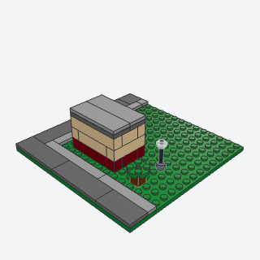
micropolis_blockThe frame every micro city module starts from, a 16 x 16 base with a 2-stud road of dark tiles along each side that faces a street and a 1-stud sidewalk inside it.
The first call of any micro city module: the 16 x 16 base, the street-side roads, and the sidewalks, so modules tile and the agent builds only in the lot it returns.
Note: The 16 x 16 module and 2-stud road rules come from the community standard as the research notes summarize it (MA section 4), not from a single book step; the road tiles are common parts, so the miner's count overstates it.
x, y, z, streets, sidewalk, base, road, walk, titlebatch-15/micropolis_block.py91405 + 87079 + 3068b (some of its parts weren't confirmed from the book; I'd pin them when writing it)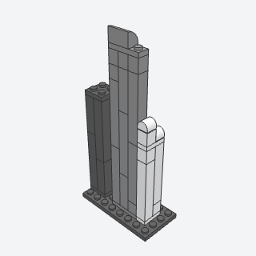
micro_towerA slender skyscraper of tall 1 x 1 bricks standing side by side on a plate and capped by another, the seams between them reading as the tower's piers.
The basic skyscraper of any micro skyline or Micropolis block: two or three tall 1 x 1 bricks side by side read as a ribbed shaft.
x, y, z, width, depth, height, color, titlebatch-15/micro_tower.py2453b + 14716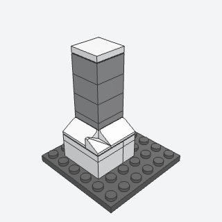
tower_setback_plinthA podium a stud wider than the tower on chosen sides, its edge covered with cheese slopes, so a micro tower flares out at street level.
Gives a micro tower a podium that flares at street level, so it stands on its plot rather than poking out of it.
Note: The book puts a 1 x 3 plate across a 1 x 2 brick with one 85984 on the overhang; this generalizes it to a podium a stud wider on any sides, with a double convex cheese slope (7826) at a corner where two ledges meet.
x, y, z, width, depth, sides, height, color, slope_color, titlebatch-15/tower_setback_plinth.py85984 + 54200 + 7826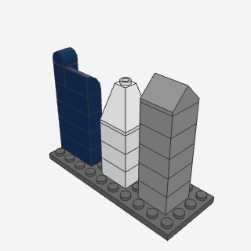
tower_crownThe top that makes a micro tower a tower, rounded, pyramid, or gabled, in the shaft's own color.
The top of every micro tower: a rounded, pyramid, or gable crown in the shaft's color is what makes a stack of bricks read as a skyscraper.
Note: Merges MA 3 (rounded) and MA 4 (pyramid, gable) under a kind param. The pyramid on a 2 x 2 is a 75 degree quadruple slope (3688), my pick; the book's gable is 3043.
x, y, z, width, depth, kind, color, titlebatch-15/tower_crown.py49307 + 37352 + 3688 + 3043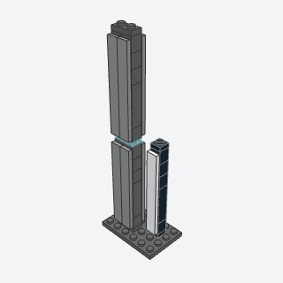
tower_side_finsA slender micro tower whose faces are tall tiles hung on side studs, each column its own strip, so the seams between them read as fins and a plate between sections as a band of floors.
A sleek micro tower with flush tiled faces, the seams between columns as fins and a transparent plate between sections as a band of lit floors.
Note: VARIANT of snot_panel for a 1-stud-deep tower. The book's brick with studs on four sides (4733) can't stand side by side (the side studs would clash), so the columns use 87087 (front only) or 47905 (front and back). Side studs 15 plates apart are 6 studs, so the face is a 1 x 8 tile, not the 1 x 6 the notes name.
x, y, z, width, sections, faces, core, face, band, titlebatch-15/tower_side_fins.py87087 + 47905 + 4162 + 14716 (some of its parts weren't confirmed from the book; I'd pin them when writing it)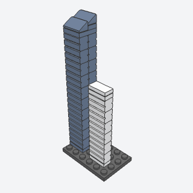
floor_band_bricksA micro glass tower built of bricks with grooved faces, whose grooves read as many fine floor lines, with an angled roofline on top.
A glass office tower whose grooved bricks show many fine floor lines, one texture for the whole tower as the micro guide asks.
Note: The research names the log brick 30136 with an id? flag; in LDraw its logs run upright, so it reads as ribs. The embossed-bricks 1 x 2 (98283) shows horizontal bands and comes in sand blue, so the sketch uses it. Barry may know the exact brick from the set.
x, y, z, depth, floors, color, roof, titlebatch-15/floor_band_bricks.py98283 + 85984 (some of its parts weren't confirmed from the book; I'd pin them when writing it)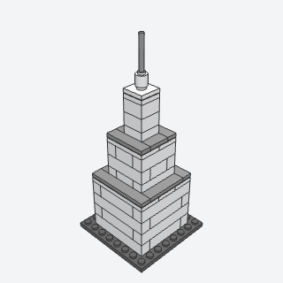
stepped_tower_setbacksA tower that narrows in tiers, each a stud in from the one below on every side with a tiled ledge round it, up to a needle spire.
An art deco skyscraper that narrows in tiers to a needle, the landmark of a micro skyline.
Note: The book finishes each tier's base edge with brackets carrying a tile skirt; the sketch uses a plain ring of tiles on the tier below as the ledge, which reads the same from a distance. Tiers are walls of plain bricks, so the miner's count will overstate it.
x, y, z, size, heights, color, ledge, spire, titlebatch-15/stepped_tower_setbacks.py87580 + 30374 + 3069b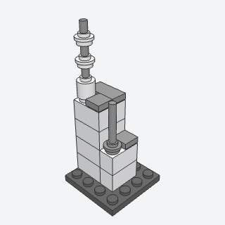
bar_spireA needle antenna or spire far thinner than a stud, a bar standing in a hollow stud with round plates threaded on it as rings.
A needle antenna or spire on any micro tower, landmark, or church: thinner than a stud, with rings for a tapering mast.
Note: VARIANT of antenna_mast (no arms, no dish; threaded rings). The validator accepts a round plate with an open stud threaded on the bar mid-way.
x, y, z, length, base, rings, color, bar_color, titlebatch-15/bar_spire.py30374 + 87994 + 85861 + 3062b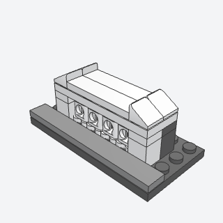
paired_colonnadeA classical museum front at micro size, pairs of columns from upright binoculars between end piers, under a plate cornice with sloped shoulders.
A classical museum, bank, or civic front at micro scale: pairs of columns in one part each, under a cornice.
Note: Upright binoculars (Rot y 90, z 90) have no connector data, but the validator takes them as held on the plate's studs. Their barrels are 0.6 studs apart and don't plug into studs, and from the front the bridge between them shows as a ring, so the columns read only up close. Barry should judge the render.
x, y, z, pairs, color, wall, titlebatch-15/paired_colonnade.py30162 (some of its parts weren't confirmed from the book; I'd pin them when writing it)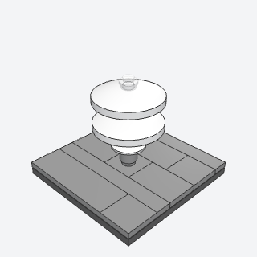
spiral_dish_stackA round micro museum whose tiers grow wider going up, inverted dishes stacked on round plates, their rims reading as the ramps of a spiral.
A round modern museum or landmark whose tiers widen going up, from a few inverted dishes on round plates.
Note: The book stacks a 3 x 3 dish (43898) on a bar; in the parts data 43898 and the 6 x 6 dish (44375b) have no socket over a stud, so they read as floating. The sketch stacks a 2 x 2 dish and 4 x 4 dishes on round plates instead; the tiers widen only once.
x, y, z, tiers, gap, color, core, skylight, titlebatch-15/spiral_dish_stack.py4740 + 3960 + 6141 (some of its parts weren't confirmed from the book; I'd pin them when writing it)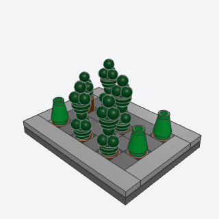
micro_tree_clusterA park of micro trees, each one to three parts, in three forms mixed at random, with the ground between them tiled.
Parks and street trees for micro and Micropolis, each tree one to three parts, where the figure-scale tree technique is far too big.
Note: VARIANT of tree (micro). Poplar cones don't come in dark green, so they take their own color (poplar).
x, y, z, length, depth, seed, leaves, poplar, trunk, ground, titlebatch-15/micro_tree_cluster.py6254 + 4589 + 6141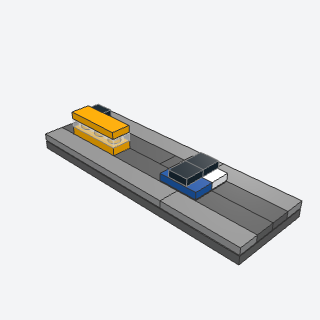
micro_trafficA 2-lane road strip of dark tiles with tiny cars and buses standing in it, each two or three parts, for the streets of a micro city.
Street life for a micro city: cars and buses standing in a dark road strip, the only thing allowed on a Micropolis road.
Note: The book's one-part micro car (likely the roller skate 11253, id?) has no connector data, so the car is the midi form: a 1 x 2 jumper with a 1 x 1 tile cabin. Each vehicle stands on a road-colored plate set flush with the road tiles. The bus (1 x 3 plate, clear plate, 1 x 3 tile) is my scale-down of the double-deck bus.
x, y, z, length, axis, cars, buses, seed, road, colors, bus, titlebatch-15/micro_traffic.py3794b + 3070b + 3623 + 63864 (some of its parts weren't confirmed from the book; I'd pin them when writing it)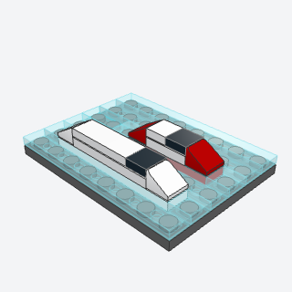
micro_boatA ferry or tug a stud wide, a plate hull with a cheese slope at each end and a deck house in the middle, for a micro harbor.
Ferries and tugs for a micro harbor or river, set on bare studs left in the water.
Note: Book: a white 1 x 4 plate, a cheese slope at each end, and a 1 x 2 tile on the middle. The sketch adds a plate under the deck house and a dark 1 x 1 tile as the wheelhouse windows, so the house stands above the slopes.
x, y, z, length, axis, hull, house, cabin, titlebatch-15/micro_boat.py54200 + 3710 + 3069b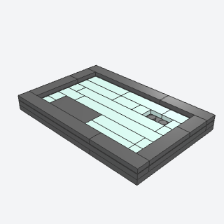
water_tile_fieldA harbor or river at micro scale, pale tiles in long runs with their seams offset row to row, a few dark patches flush in the water as shadows, and a dark rim so the water sits a plate down.
A harbor, river, or lake in a micro or architecture base: pale tiles with offset seams, flush shadows, and a dark rim.
Note: VARIANT of river (micro and midi: straight rows, recessed rim, shadow patches). Defaults to Light Aqua; Trans Light Blue works with the same tile sizes.
x, y, z, length, depth, seed, shadows, studs, rim, water, shadow, edge, titlebatch-15/water_tile_field.py4162 + 87079 + 2431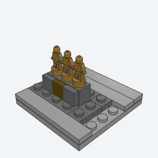
statuette_groupA small bronze statue group for a micro plaza, statuettes side by side on a dark plinth with a plaque on its front.
A bronze statue group on a plinth for a micro plaza or stadium forecourt; the only people a micro model shows.
Note: The book's plaque is a printed tile; the sketch uses a plain Metallic Gold tile.
x, y, z, count, color, plinth, plaque, titlebatch-15/statuette_group.py90398 + 11211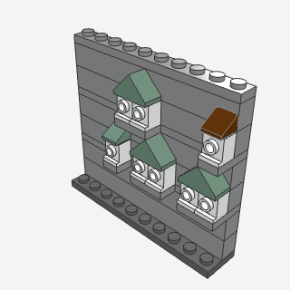
micro_house_on_wallTiny houses a stud or two wide standing on ledges in the face of a bigger wall, at different heights, so a figure-scale city wall reads as a far-off town climbing behind it.
Makes a figure-scale city wall or castle tier read as a big town climbing behind it, with tiny houses on ledges in its face.
Note: The FM notes attach the houses SNOT but don't pin the parts; the sketch seats each house on a ledge plate built into a plate course of the wall (half under the bricks above), which validates. The headlight brick's recess is the window.
x, y, z, length, tiers, houses, seed, wall, house, roofs, titlebatch-15/micro_house_on_wall.py4070 + 54200 + 3044c (some of its parts weren't confirmed from the book; I'd pin them when writing it)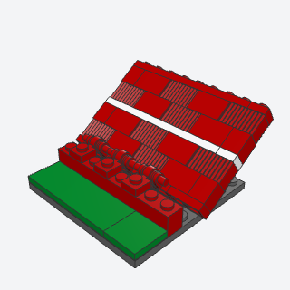
raked_seating_panelA micro stadium stand, built as an upright wall of grille bricks and plain bricks with white aisle plates across it, then laid back at the stand's rake on clip hinges, so the grilles read as rows of seats.
Any stadium, arena, or theater stand at micro scale: one cheap pattern of grille bricks and white aisle plates, built standing and leaned back on clips.
Note: Uses hinge_roof's clip-and-handle geometry to lean the panel back to the rake (35 degrees by default). Built standing, the grille ribs run up the rake, not across it; the white aisle plates carry the rows. A course of bricks under the clips lifts the hinge so the panel's back edge clears the ground.
x, y, z, length, rows, rake, color, aisle, clip_color, titlebatch-15/raked_seating_panel.py2877 + 2540 + 4081b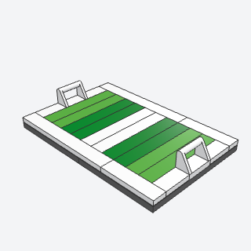
mowed_pitchA micro playing field, tiled in stripes of two greens like a mown lawn, inside white touchlines with a halfway line and a goal at each end.
A playing field for a micro stadium or a park module: stripes of two greens, white lines, and handle-tile goals.
Note: VARIANT of tiled_floor. The goal (a 1 x 2 tile with a handle, 2432) is my pick; the book's goal part isn't named. With an even length the halfway line is two studs wide.
x, y, z, length, width, light, dark, line, goals, titlebatch-15/mowed_pitch.py6636 + 2432 (some of its parts weren't confirmed from the book; I'd pin them when writing it)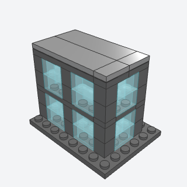
curtain_wall_glazingA modern glass building at micro scale, columns of transparent bricks between dark 1 x 1 mullions, with a dark plate band at every floor.
A modern glass office block at micro or Micropolis scale: transparent brick bays between dark mullions, a slab band each floor.
Note: VARIANT of shop_window / snot_panel. Uses the book's second way (stacked transparent 1 x 2 bricks between dark mullions); the first, tiles on a plate stood up, isn't built.
x, y, z, length, depth, floors, rows, glass, frame, roof, titlebatch-15/curtain_wall_glazing.py3065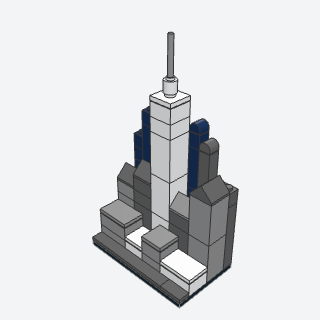
skyline_depth_rowsA micro city skyline in three rows by depth, dark towers at the back, gray ones in the middle with one white landmark far taller than the rest, and low light blocks in front, so a shallow base reads deep.
A whole micro skyline in one call: three depth rows colored by distance, light low blocks in front, a white landmark in the middle, dark towers behind.
Note: Combines MA 52 (depth by color) with the micro skyline rules; a style rule more than one part, so its parts are common.
x, y, z, length, seed, front, middle, back, landmark, titlebatch-15/skyline_depth_rows.py2453b + 2454b + 30145 + 37352